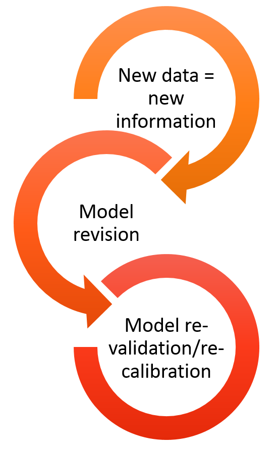

What is SpaDES?
Ceres Barros, Eliot McIntire, Tati Micheletti, Alex Chubaty
October 2019
Source:vignettes/01a-WhatIsSpades.Rmd
01a-WhatIsSpades.Rmd
What is SpaDES and how does it work?
Why is modelling important?
Models are nowadays so important and widespread that we often don’t realize that most of what we use in our daily lives is the result of someone’s (or some team’s) model. From weather forecasting, to predicting stock market fluctuations. From the design of your bike, to the estimation of blood sugar and insulin levels and how they vary hourly and according to different diets (in case you don’t know, this can be important for diabetes treatments, and drug dosage and scheduling)… Models are indeed ‘everywhere’.

Challenges modellers face
In a world where disciplines often interact to study complex questions, like climate change, natural resource management, or even where to build an offshore wind farm, modellers (and model users!) face challenges that can impair scientific and social progress:
-
Many models, low integration
- different scientific teams/individuals develop models to investigate the same question - which to choose?
- these models sometimes vary in their degree of complexity - when is one more appropriate than the other?
- and are often written in different programming languages, sometimes making their comparison, integration and development harder (especially for those who are not the model authors!)
-
High complexity
- often solving a question, or problem, requires the cooperation of different teams, each contributing with distinct data and, possibly, models that need to be integrated;


-
Era of big data
- data availability and volume are increasing FAST;
- today’s model, will be outdated tomorrow -> models need to be constantly updated, revised and re-validated and re-calibrated.
-
Reproducibility and transparency
- one of the first premisses of scientific method is to repeat analyses and verify whether hypotheses hold in different conditions -> science must be reproducible in order to progress;
- models (and modellers!) should be open to change and adaptation;
- results and conclusions must be shared with stakeholders, managers, policy makers and the general public.
How do we tackle these issues? -> continuous adaptive management
Continuous adaptive management is an existing framework that assumes a periodic re-assessment of the status of a situation or issue, e.g. the amount of waste a company produces. This leads to the design and implementation of new solutions - e.g. recycling paper or using rain water - their monitoring and evaluation, and their adjustment if need be, before the next assessment.
In modelling terms, this framework implies that for a given problem/question analyses and forecasts are repeated as new data, new methodologies and new or improved models arise. This can lead to a re-assessment of risk, inform decisions and influence policy making. These can in turn feedback into the process of re-framing the initial problem/question.
Although this framework is ideal, it is only seldomly applied across the scientific community.
Why? Because we are yet far from developing our research in a way that is easily repeatable, “upgradeable” and shareable. This renders the application of the continuous adaptive management framework costly, both temporally and financially, especially in interdisciplinary projects that involve multiple teams and stakeholders.
What is SpaDES?
SpaDES - Spatial Discrete Event Simulator - is a modelling framework in the form of an ensemble of R packages. It aims to provide modellers and non-modellers across different domains of life and earth sciences (and beyond!) with a modelling tool that they can control, apply and develop. In its whole, SpaDES bridges the gaps between modellers and model-users of different disciplines, between scientists, practitioners, managers, stakeholders and policy makers, and between scientists and the general public.
How?
1. SpaDES is written in R: a widely understood programming language, highly suited to statistical analyses, but flexible and fast enough to accommodate simulation work;
2. SpaDES can be used for a wide-range of modelling approaches: + process-based models; + phenomenological models; + spatially-explicit models; + … 3. SpaDES models are built of modules, i.e. self-contained, interacting pieces that execute a particular event, or process in the model; 4. SpaDES modules can be made available across the entire R community if module-developers wish it so; 5. SpaDES will soon include a web-app builder to make interactive simulation possible.
Like a smart-phone where users install and use the apps that they want, SpaDES can be seen as a platform where a model can be “assembled” from various pre-made modules. This allows non-modellers to run someone else’s model on their data and their parameters, and, on the other hand, it allows modellers write their own modules from scratch, run them and share them with the R user community.
An example
Our question(s): how will forest fires affect forest age? And how will climate change affect fire regimes and in turn the vegetation? How will timber supply be affected?
To start we’ll need:
- a vegetation dynamics module - e.g. forestAge;
- a fire simulator - e.g. forestSuccessionBeacons modules;
- optional:
- the interaction between fire and vegetation
- statistical analyses/presentation of results
Depending on how modules are built, the interaction between modules may or may not require additional modules. Similarly, the presentation of results and their analyses can be directly made within the module producing them, or as posteriori using another module. Your call. SpaDES is all about flexibility!
Using the above mentioned modules would already allow an analysis of how fires affect forest age, and vice-versa.
Then add climate-change, timber supply models…
Analysing the effects of climate change could then be done by varying fire-related parameters (e.g. frequency and intensity of fires) in a simulation experiment. Alternatively, an additional module could simulate climate change effects, which would feedback unto both fire parameters and vegetation.
Finally, a timber supply module could “read” the vegetation maps produced after fire simulations and calculate timber quantity and quality from forest conditions (e.g. surviving tree species and their age).
Reserve, add new data, and re-run
Provided that modules are able to download, read and treat data adequately, updating the simulations for new data is easy. SpaDES comes with a set of functions (via the reproducible package) that enable caching model structure, parameters and simulation results. This way, if new data only affects a section of the model, the user won’t have to repeat every step to update the simulations.
- Learn more about: sharing modules and caching (here and here)
Decorate and serve
Because models are not just for modellers, a shiny app building package is being developed to transform any SpaDES simulation into a web-app. This provides an interactive way of visualising results, as users can change simulation parameters and turn modules on and off, whilst observing how this impacts simulation results. Importantly, it can be particularly useful when conveying results to a non-expert or even the public.
Shiny web-app demo here and here
Exercises. Getting started with SpaDES in R
1.1 Installing SpaDES
SpaDES groups a series of R packages - metapackage - containing both core and additional methods to design a discrete event simulation model:
- an up to date version of
R- having R Studio, or anotherReditor might also be useful.
- the package
devtoolsinstalled
- Rtools (Windows), XCode (Mac), or r-base (Linux; please see here for details).
SpaDESis still on a relatively steep development curve. As such, it might be sometimes necessary to update a particular package from Git Hub (where SpaDES is being developed). It might be important to keep an eye on new improvements present in Git Hub that might not be in CRAN yet. You’ll find the latest releases for each package in their respective Git Hub page (e.g. SpaDES.core releases). If you go to the commits page you’ll notice that that there might be new features relatively to the latest commit.
###################
# Make sure your existing packages are updated, and correct for the version of R
###################
# Get latest versions of key SpaDES packages from CRAN
dependencies <- tools::package_dependencies("SpaDES", recursive = TRUE)
# Update any versions of these dependencies that are already on your machine
update.packages(oldPkgs = unlist(dependencies), ask = FALSE, checkBuilt = TRUE)
# Install any dependencies that are missing --
# install.packages is not getting correct dependencies
missingPkgs <- dependencies$SpaDES[!(dependencies$SpaDES %in% rownames(installed.packages()))]
if (length(missingPkgs))
install.packages(missingPkgs, dependencies = FALSE)
###################
## Install all SpaDES packages
###################
install.packages('SpaDES', dependencies = FALSE)
## now, update some of the packages from the development branch.
devtools::install_github("PredictiveEcology/reproducible", ref = "development", dependencies = TRUE)
devtools::install_github("PredictiveEcology/quickPlot", ref = "development", dependencies = TRUE)
devtools::install_github("PredictiveEcology/SpaDES.tools", ref = "development", dependencies = FALSE)
devtools::install_github("PredictiveEcology/SpaDES.core", ref = "development", dependencies = FALSE)
1.2 Modules included in the SpaDES package
## load SpaDES
## RESTART R -- using Ctrl-Shift-F10 (may work if in Rstudio) or other
library(SpaDES)
## Locate the sample modules in SpaDES.core
sampleModuleDir <- system.file('sampleModules', package = 'SpaDES.core')
## list the modules in this directory
dir(sampleModuleDir)What do these modules do?
## open the sample module Rmd file to learn more about the modules and access a simple example
sampleModuleFiles <- list.files(sampleModuleDir, pattern = 'Rmd$', recursive = TRUE, full.names = TRUE)
## open the Rmd file
file.edit(sampleModuleFiles)As a best practice, modules should come with an .Rmd file that provides a summary of how the module works and reproducible example, though this is not actually imposed. If you’ve ever searched for R-help on stackoverflow you’ll have noticed how people try to provide R code that can be run in any machine to reproduce the problem/solution at hand. Module .Rmd files should also run in any machine.
1.3 Simulation modelling with SpaDES
Let’s go back to the modelling question discussed briefly above.
Our first objective is to simulate the effect of fire on forest age. There are two main components to such a model, which need to interact:
- a fire simulator;
- a forest age simulator.
1.3.1 Download modules
The LCC2005 module group provides a set of modules that can reproduce these dynamics (in a simple way).
Let’s define the working directories of our simulation exercise (SpaDESintro) first.
main.dir <- "~/temp_SpaDESws"
## We'll create the necessary directories in a temporary location - feel free to change this if you wish to.
setPaths(cachePath = file.path(main.dir,'cache'),
inputPath = file.path(main.dir, 'inputs'),
modulePath = file.path(main.dir, 'modules'),
outputPath = file.path(main.dir, 'outputs'))
## verify that this is want you wanted:
getPaths()Now we’ll get LCC2005 modules needed and save them in the modules folder created before. If you already have done this before and want to do it again, set the overwrite argument to TRUE.
## note how we use the modules folder defined above and chose to download the necessary data
downloadModule('LCC2005', path = getPaths()$modulePath, repo = 'PredictiveEcology/SpaDES-modules', overwrite = TRUE)Now we can download the data needed for the modules.
downloadData("LccToBeaconsReclassify") # 41 MB fileBut what happens if the module doesn’t require any data? Let’s try to download data for any other module that doesn’t need data.
In the next block, why does the second one re-download the same dataset as we just downloaded?
downloadData("fireSpreadLcc") # Note it will hit the error "Error in curl::curl_fetch_memory(url, handle = handle) : Could not resolve host: NA".
downloadData("cropReprojectLccAge") # Note that there is an error in the end of this download (at the last file). "Could not resolve host: ftp.daac.ornl.gov". This is related to a missing map that we will fix belowUnfortunately, the forest age raster (can_age04_1km.tif) is no longer downloadable without creating an account on the NASA EarthData website. We have provided a copy, which you can download from here and put in file.path(getPaths()$modulePath, "cropReprojectLccAge/data") and file.path(getPaths()$modulePath, "modules/forestAge/data") (this will only be possible during the workshop). However, downloading objects/files from the internet is a common problem. To enhance reproducibility, the function will not download a file again if it has a local copy:
# downloads
age <- prepInputs(url = "https://github.com/PredictiveEcology/SpaDES.Workshops/raw/master/can_age04_1km.tif",
destinationPath = file.path(getPaths()$modulePath, "cropReprojectLccAge/data"))
# doesn't download, because it is already there -- uses Checksums
age <- prepInputs(url = "https://github.com/PredictiveEcology/SpaDES.Workshops/raw/master/can_age04_1km.tif",
destinationPath = file.path(getPaths()$modulePath, "cropReprojectLccAge/data"))
file.copy(raster::filename(age),
file.path(getPaths()$modulePath, "forestAge/data"))For future reference, it is possible to create an account on the NASA EarthData website and, after logging in, you’ll find the file here.
## open the description of the LCC2005 module group - on Windows this doesn't work because of an Rstudio issue, instead the message provides the lines to copy and paste
openModules('LCC2005', path = getPaths()$modulePath)
## list all module files within LCC2005 and open them
LCC2005ModuleFiles <- list.files(getPaths()$modulePath, pattern = 'Rmd$', recursive = TRUE, full.names = TRUE)
## open module Rmd files
file.edit(LCC2005ModuleFiles[1])
lapply(LCC2005ModuleFiles, file.edit)As you can see, LCC2005 is a module group, meaning that it contains several modules that work together. Find more about module groups here.
In this exercise, we will follow a simplified version of the example contained in the LCC2005.Rmd file. We will only use the modules necessary to simulate vegetation dynamics (cropReprojectLccAge, forestAge, forestSuccessionBeacons and LccToBeaconsReclassify) and fire spread (fireSpreadLcc).
1.3.2 Simulation setup
## We've defined the paths earlier
paths <- getPaths()
## we'll use several, but not all the modules in LCC2005
modules <- list("cropReprojectLccAge", "fireSpreadLcc", "forestAge", "forestSuccessionBeacons", "LccToBeaconsReclassify")
## we don't need to supply external objects
objects <- list()
## define the starting and end times of the simulation
times <- list(start = 1.0, end = 20.0)
## define parameters. This will override any default parameters during this simulation.
parameters <- list(
.globals = list(stackName = "landscape", burnStats = "nPixelsBurned"),
.progress = list(NA),
fireSpreadLcc = list(nFires = 10L, drought = 1, its = 1e6,
persistprob = 0, returnInterval = 1, startTime = 1,
.plotInitialTime = NA, .plotInterval = 10)
)
## list parameters
ls.str(parameters)
## make simulation object
mySim <- simInit(times = times, params = parameters, modules = modules,
objects = objects, paths = paths)
1.3.3 Simulation object - simList
The object mySim contains all the necessary information to run the simulation, such as the objects that are shared between modules, and how these are linked between them. It’s called a simList. You can find out more about the simList object here.
Let’s have a look at what mySim contains and how modules are connected.
## list the contents of mySim
ls.str(mySim)
dev()
mySim$age[] <- mySim$age[]
Plot(mySim$age, title = "National age map") # usually faster than plot(mySim$age)
## plot module connections
dev()
objectDiagram(mySim)
## see which events are scheduled
events(mySim)You’ll note that SpaDES has scheduled the initialisation events for each module.
1.3.4 Running a SpaDES simulation
Now that we’ve checked the structure of our simulation model, we can go ahead and run it.
dev() # to open a new plot device for faster plotting
clearPlot()
mySim2 <- spades(mySim, debug = TRUE) # set debug = TRUE to print simulation steps.
## After running the simulation, we can print the event diagram, the completed events and the scheduled events
eventDiagram(mySim2)
completed(mySim2)
events(mySim2)1.3.5 Change model parameters without restarting
With SpaDES it is possible to change a simulations’ parameters and then continue running it. This is possible because, even though the simulation stopped at year 20, SpaDES has scheduled the “next” events (see the result of the events call above). Find out more about events and event scheduling here.
What will happen if drought intensity increases and fires become more frequent?
end(mySim2) ## accesses the last year
end(mySim2) <- 50 ## add another 30 years to the end of the simulation.
## Alternatively use end(mySim2) <- end(mySim2) + 30
params(mySim2)$fireSpreadLcc$drought ## accesses the current drought parameter value
params(mySim2)$fireSpreadLcc$drought <- 3 ## changes it
params(mySim2)$fireSpreadLcc$returnInterval ## accesses the current fire return interval value
params(mySim2)$fireSpreadLcc$returnInterval <- 1 ## changes it
clearPlot()
mySim3 <- spades(mySim2, debug = TRUE)
time(mySim2) ## "current" time (i.e. the time at which the simulation finished)
time(mySim3)1.3.6 Add a friend’s module
The second part of our question was to investigate how forest fires may affect harvesting. The LCC2005 module group does not contain any module that we can use for this, but that’s OK, because we can get modules from other Git repositories.
We will use an extremely simple module that maps areas that are adequate for forest harvesting in function of forest age (a parameter that the user inputs) and the type of forest that can be harvested (here, only coniferous forests). This module, called forestHarvest, will be downloaded from a different repository “CeresBarros/forestHarvest-SpaDESmodule”. Learn more about downloading and sharing modules here.
downloadModule(name = "forestHarvest", repo = "CeresBarros/forestHarvest-SpaDESmodule", path = getPaths()$modulePath, overwrite = TRUE)
## We've defined the paths earlier
paths <- getPaths()
modules <- list("cropReprojectLccAge", "fireSpreadLcc", "forestAge", "forestSuccessionBeacons", "LccToBeaconsReclassify", "forestHarvest")
## we don't need to suply external objects
objects <- list()
## define the starting and end times of the simulation
times <- list(start = 1.0, end = 50.0)
## notice the new parameter list
parameters <- list(
.globals = list(stackName = "landscape", burnStats = "nPixelsBurned"),
.progress = list(NA),
fireSpreadLcc = list(nFires = 10L, drought = 1, its = 1e6,
persistprob = 0, returnInterval = 10, startTime = 1,
.plotInitialTime = 0.1, .plotInterval = 10),
forestHarvest = list(returnInterval = 5, harvAge = 50, startTime = 11, .plotInterval = 5)
)
## make simulation object
mySim_manag <- simInit(times = times, params = parameters,
modules = modules,
objects = objects, paths = paths)
dev()
moduleDiagram(mySim_manag)
objectDiagram(mySim_manag)
dev()
clearPlot()
mySim_manag2 <- spades(mySim_manag, debug = TRUE)1.3.7 Choose to save outputs without changing module code
It is possible to set SpaDES to save particular objects at a user-defined interval. For this, we need to change the simInit call to include the outputs parameter, where we define the objects to be saved, the saving interval, etc. Check the R help for simInit for more details.
## Change simInit to include the outputs options
mySim_manag <- simInit(times = times, params = parameters,
modules = modules,
objects = objects, paths = paths,
outputs = data.frame(objectName = "ageMap", saveTime = seq(1, 50, by = 10)))
## Re-run the model
dev()
clearPlot()
mySim_manag2 <- spades(mySim_manag, debug = TRUE)
## Print the list of saved outputs
outputs(mySim_manag2)
## Read the first object (two)
ageMap01 <- readRDS(outputs(mySim_manag2)$file[1])
## Now you can visualise the saved map in any way you want
dev()
clearPlot()
Plot(ageMap01, title = "Stand age")
tble <- table(ageMap01[])
frq <- as.data.frame(tble)
names(frq)[1] <- "ageClass"
frq # Frequency of age distribution
hst <- hist(ageMap01[])
Plot(hst, title = "Age distribution")Are there fewer areas that are appropriate for harvesting if fires become larger (i.e. drought is more severe)?
end(mySim_manag2) <- 100
params(mySim_manag2)$fireSpreadLcc$drought <- 3
dev()
clearPlot()
mySim_manag3 <- spades(mySim_manag2, debug = TRUE)
1.4 Show your SpaDES model to the world!
Soon SpaDES will have another package that will allow building web-apps from simList objects, so that simulation results can be visualised and changed interactively. For now, you can play around with the proof-of-concept shiny app, but also with the real LandWeb project:
1.5 Use Github.com
We have shown, in this section, downloadModule. It is good for people who are using modules, but who don’t plan on developing modules. For that, we should use version control. All the modules we looked at today can be cloned by going to the web page:
https://github.com/PredictiveEcology/SpaDES-modules
Also, some of these modules are their own repository, and so you can clone them directly from their own, e.g., LandMine:
https://github.com/PredictiveEcology/LandMine